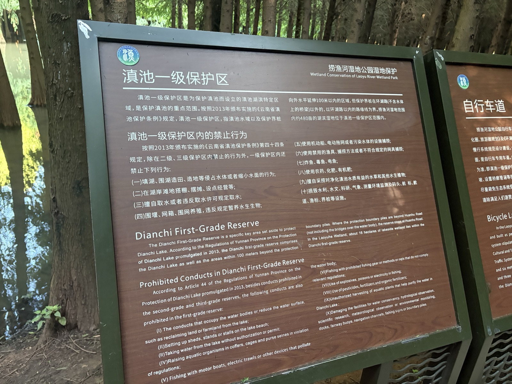
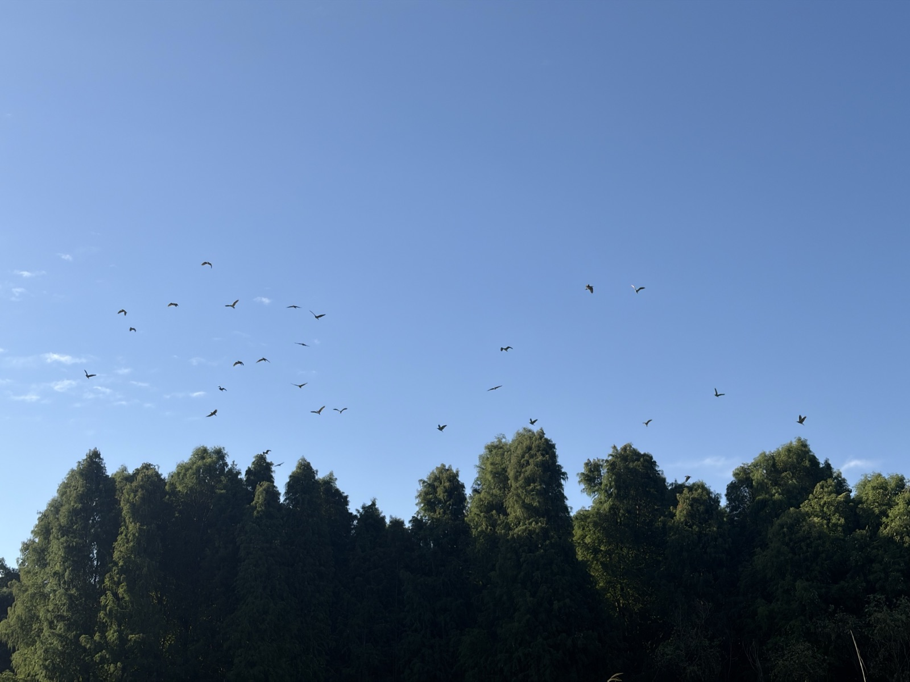
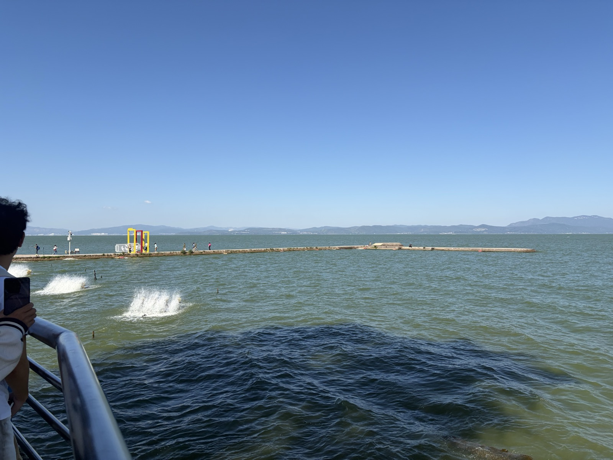
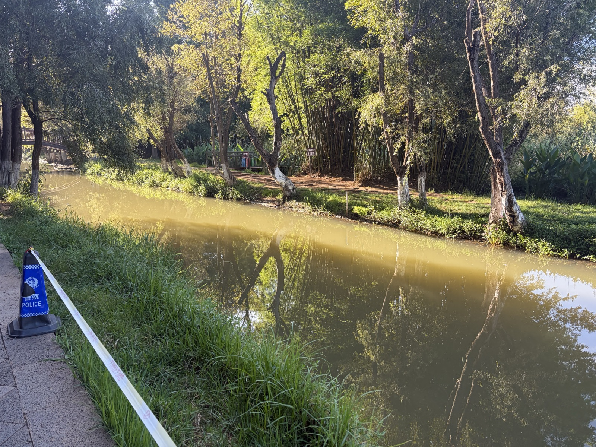
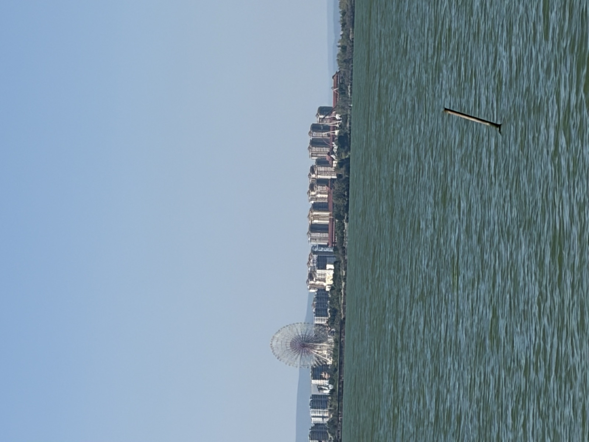
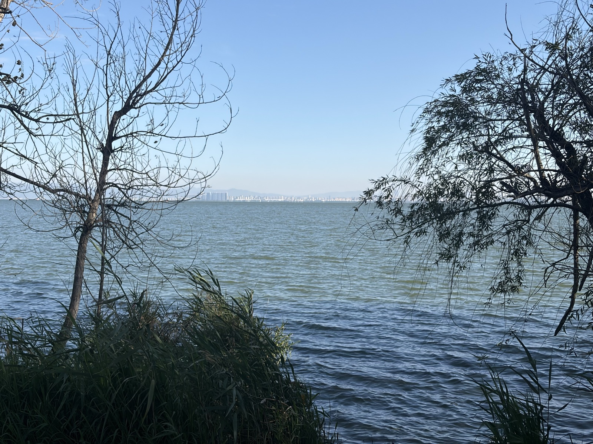

捞渔河湿地公园开放
湿地保护、生态修复与公众自然教育逐渐进入城市生活。
FIELD JOURNEY · 探索路线
从湿地到村落，沿着滇池东岸观察生态环境与人居空间的变化
01
水体 · 林木 · 栈道 · 鸟类
02
开阔水面 · 城市天际线
03
传统村落 · 雨污分流 · 民宿 · 文旅
捞渔河是湿地观察，海晏村是村落观察。
滇池是两者共同的生态背景。
01 · THE WETLAND
自然修复的现场 · 人与生态的边界

[现场观察]
现场第一眼看到的是这块"滇池一级保护区"的牌子。上面列出了明确的禁止行为：围湖、围湖造田、填湖、违规取水、违法捕捞、使用污染水体的设施……
这块牌子让我意识到：生态保护并不是只依靠个人自觉。它需要法律法规、管理制度、工程建设和公众意识共同发挥作用。
[现场观察]
现场可以看到湿地中设置了步道和木栈道。它一方面方便游客进入和观察湿地，另一方面又限制了人的活动范围。
生态保护不一定意味着完全把人排除在自然之外，更重要的是通过合理的空间规划，让人的活动与生态系统保持适当距离。

贯穿湿地的木栈道 · 引导而非阻挡

成片的树木生长在浅水或湿润环境中
[现场观察]
树木成片分布，水体穿行于林地之间，木栈道从湿地中延伸。阳光从树冠之间照下来，水面能够看到树木的倒影。
湿地与普通城市公园之间存在明显区别 —— 城市公园以人的活动需求为主要设计依据，而湿地首先考虑的是生态系统本身。
部分区域水面比较开阔，部分区域被树木和水生植物分割开来。阳光从树冠之间照射下来，水面能够看到树木的倒影。

水面与树木倒影

现场观察到的鸟群 · 生态环境变化最终会体现在生物多样性上
[现场观察]
现场能看到鸟群飞过水面。一次实地观察不能据此判断鸟类数量是否比过去增加，但这些真实的生物活动让我感受到 —— 湿地并不是只供人观赏的绿色景观，而是一个仍然具有生命活动的生态空间。
02 · THE VILLAGE
传统村落 · 生态治理 · 乡村发展
如果说捞渔河主要讲"自然生态"，海晏村则讲"人与自然、村落与发展"。两者形成对照，构成本次实践的另一半。
PAST · 过去
村民主要从滇池获得生产资料。捕鱼、种田、临水而居，村庄与滇池之间是直接的生产关系。
NOW · 现在
传统民居改造为民宿与餐饮空间。雨污分流、道路整治、历史建筑修缮后，村庄更像是与滇池"一起生活"。

海晏村附近滇池湖面 · 生态设施与开阔水面
[现场观察]
海晏村是滇池东岸具有较长历史的传统村落。过去村民更多直接从滇池获得生产资料；如今，越来越多的经济活动开始依靠滇池的生态景观、村落文化和历史建筑。
人与滇池之间的关系从直接利用自然资源逐渐转向在保护自然资源的基础上利用生态价值和文化价值。

海晏村亲水步道 · 公共休闲空间
现场可以看到游客和居民沿着亲水步道观察滇池，远处可以看到山体和城市建筑。这些景象让我感受到 —— 今天的滇池沿岸已经不是单纯的自然空间，而是生态、城市生活和公共休闲活动共同存在的区域。

雨污分流、河道整治后的入湖河道
[现场观察]
海晏村近年来进行雨污分流、道路改造、历史建筑修缮和公共空间提升。这些工程直接影响村庄污水是否进入滇池。
生态文明建设有时候不体现在非常宏大的工程上，而是体现在地下管网、污水处理、垃圾管理等看似普通的基础工作中。

海晏村渔村历史展
[现场观察]
海晏村过去与滇池渔业生产密切联系。如今传统民居经过改造后成为民宿、咖啡馆和餐饮空间。2024 年海晏村接待游客超过 220 万人次。
但乡村振兴不能仅仅理解成"游客多了、商铺多了"。村庄需要在传统村落保护、居民生活、旅游开发和生态保护之间不断寻找平衡。
THE BALANCE · 平衡
雨污分流、岸线修复、湖滨生态带 — 守住滇池。
就业、收入、公共服务 — 村庄还是大家的家。
古渔村、青石板、村史馆 — 留下"这里曾经是谁"。
民宿、餐饮、公共空间 — 让生态与文化产生价值。
FIELD ARCHIVE · 现场档案
把一次观察留下来的影像，重新排列成一条阅读路径
 FIELD 10 · HAIYAN
FIELD 10 · HAIYAN
 FIELD 11 · HAIYAN
FIELD 11 · HAIYAN
 FIELD 12 · HAIYAN
FIELD 12 · HAIYAN

FIELD 13 · DIANCHI
FIELD 14 · DIANCHI
FIELD 15 · LAOYU
03 · THE CHANGE
从保护区、湿地修复，到村落治理与文旅转型
湿地保护、生态修复与公众自然教育逐渐进入城市生活。
雨污分流、道路整治、历史建筑修缮和公共空间提升。
海晏村全年接待游客超过 220 万人次，传统村落进入新的发展阶段。
捞渔河湿地公园开放
2024 年游客量（公开报道）
FIELD NOTES · 现场笔记
水面倒影、流动的水体，是湿地最直观的生命迹象。
植物构成了湿地的主体，也给鸟类等生物提供栖息空间。
生物活动让生态保护从抽象概念变成可以被看见的现场。
步道、村落、民宿与公共空间，都说明人仍然生活在这个生态系统里。
04 · REFLECTION
这次实践让我看到，生态文明并不是一个遥远的宏大概念。
它可以是一块保护区标识牌，可以是一条看不见的污水管网，可以是一段让游客靠近自然、又不打扰自然的木栈道，也可以是一座在保护中继续生活的传统村落。
从捞渔河到海晏村，我看到的不是“自然”和“人”的二选一，而是一个需要不断寻找平衡的系统。
EVIDENCE CHAIN · 证据链
记录看到的水、植物、鸟类、步道与村落空间。
把视觉信息转化为关于生态、治理和人地关系的思考。
用公开报道与资料补充时间、游客量等可验证信息。
说明：现场照片用于记录观察；涉及历史、数据和政策的内容，以公开资料为依据，避免把一次现场观察当成完整的长期监测结论。
SOURCES · 资料来源